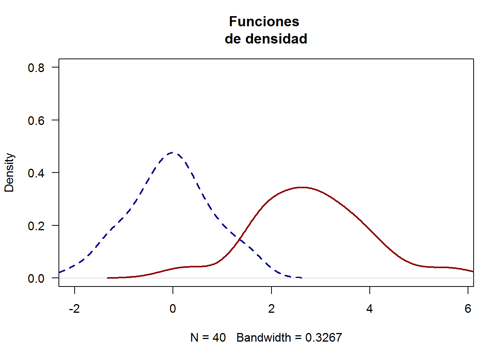

densidades de variables generadas de una distribucion normal
Se generaron muestras de una normal con media 0 y desviacion estandar 1
var1 <- rnorm(40,mean=0,sd=1)
var2 <- rnorm(40,mean=3,sd=1)
plot(density(var1),xlim=c(min(var1),max(var2)),ylim=c(0,0.8),lty=2,lwd=2,col="darkblue",main="Funciones
de densidad", las= 1)
lines(density(var2),lwd=2,col="darkred")
datos<- read.csv("Accidentalidad_nueva_3.csv")
head(datos)## COMUNA TIPO.DE.ACCIDENTE GRAVEDAD MES DIA.SEMANA
## 1 Belen Caida ocupante HERIDO 11 VIERNES
## 2 Corregimiento de Santa Elena Choque SOLO DANOS 3 MIERCOLES
## 3 Manrique Otro HERIDO 8 MARTES
## 4 Popular Otro SOLO DANOS 9 JUEVES
## 5 Laureles Estadio Choque MUERTO 11 MARTES
## 6 La Candelaria Choque SOLO DANOS 4 MIERCOLES
## NUMERO.ACCIDENTE
## 1 6
## 2 2
## 3 4
## 4 0
## 5 0
## 6 202accidentes<-datos$NUMERO.ACCIDENTE
plot(density(x=accidentes), main="Densidad de la frecuencia de accidentes en el ano 2016 en medellin", xlab="Accidentes", ylab="Densidad", lwd=4, col="blue", las=1)